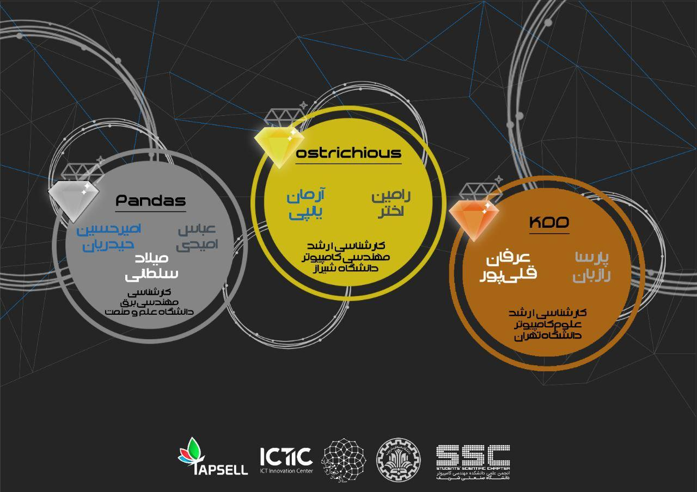
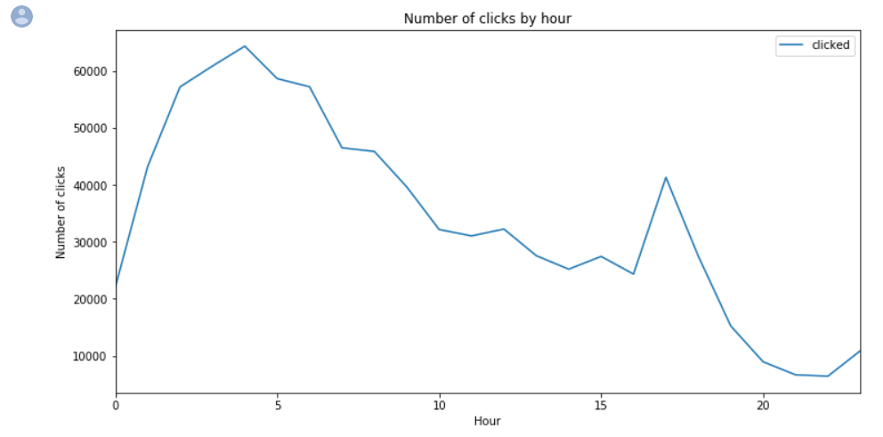
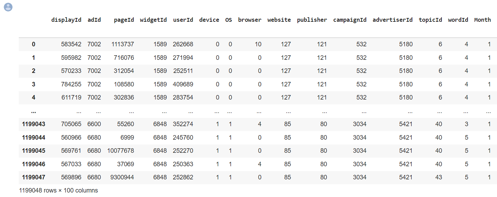
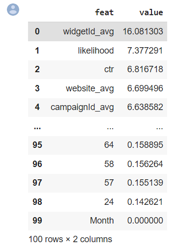

By: DataDays, Sharif University of Science and Technology
When: October 2019 - March 2020
Objective: The objective of the competition was to predict which ads a user is more likely
to click on based on their features including the time, os, browser, etc.
Results:
Our team managed to get the second rank among 121 teams from 84 universities in Iran.

The scoreboad containing the results of the competition
Some pictures of the Environment Perception task are as follows:

An Example of Statistical Analysis of the Number of Clicks Based on Various Parameters

View of One of the Datasets Used to Teach the Model:

A picture of the importance of our own features compared to pre-existing features in the dataset: